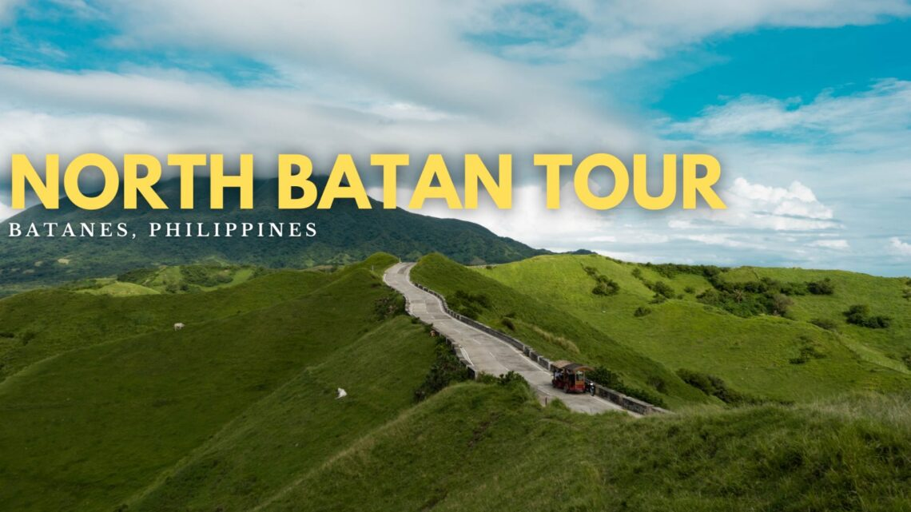
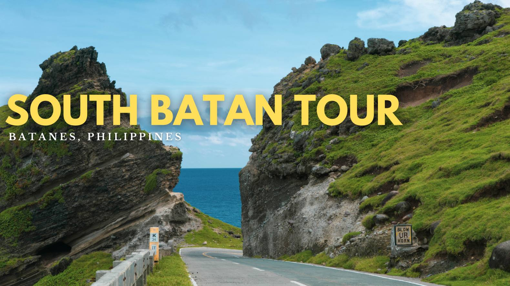
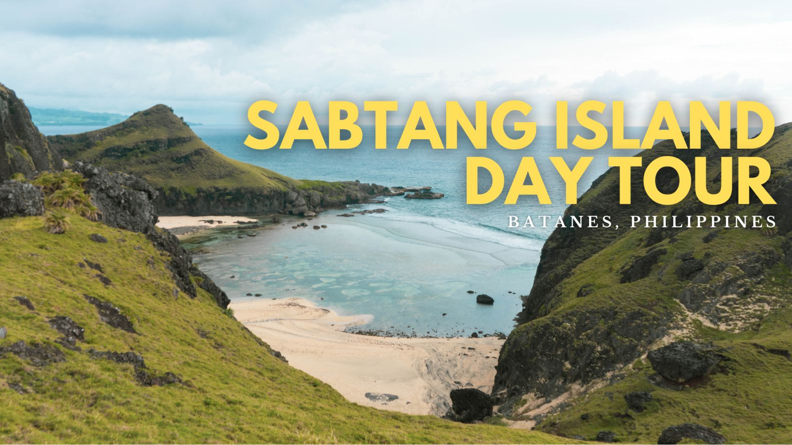
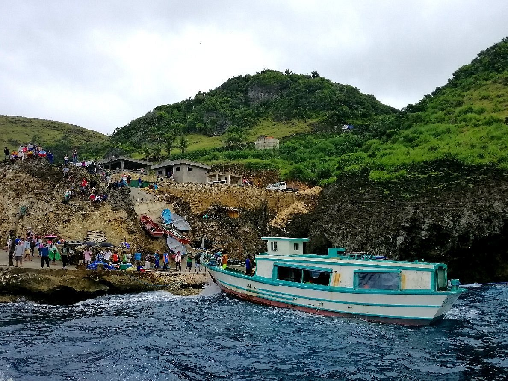

North Batan Tour

Explore the scenic northern part of Batan Island, starting with the iconic Basco Lighthouse atop Naidi Hills, offering panoramic views of the West Philippine Sea. Visit the Vayang Rolling Hills, known for its lush, undulating landscapes. Discover the unique Valugan Boulder Beach, with its smooth boulders formed by volcanic activity. Delve into history at the Japanese Tunnel, a World War II relic, and admire the architecture of Mount Carmel Chapel and the Tukon Radar Station. This half-day tour provides a blend of natural beauty and historical insights.
South Batan Tour

Journey through the southern municipalities of Ivana, Mahatao, and Uyugan. Begin at the Chawa View Deck, offering breathtaking coastal vistas. Visit the San Carlos Borromeo Church, a National Cultural Treasure, and the Tayid Lighthouse overlooking the Pacific Ocean. Experience the expansive Racuh a Payaman, also known as Marlboro Country, with its rolling hills and grazing cattle. Explore the Alapad Rock Formation and the ruins of Sitio Songsong, a village abandoned after a tsunami. Conclude the tour at the famous Honesty Coffee Shop, where goods are sold on an honor system.
Sabtang Island Excursion

Take a short boat ride to Sabtang Island, renowned for its preserved Ivatan culture. Wander through the traditional stone houses of Savidug and Chavayan villages. Marvel at the Chamantad-Tinyan Viewpoint, offering panoramic views of cliffs and the sea. Relax at Morong Beach and see the natural rock arch known as Nakabuang Arch. Visit the San Vicente Ferrer Church, one of the oldest in Batanes. This day trip immerses you in the island's rich heritage and natural beauty.
Itbayat Island Adventure

Embark on an adventure to Itbayat, the northernmost inhabited island in the Philippines. Explore the Torongan Cave, believed to be the first landing site of Austronesians. Hike up Mount Karoboboan for panoramic views of the island. Discover Rapang Cliff, a natural park with limestone formations and bonsai trees. Experience the unique architecture of traditional Ivatan houses, built to withstand typhoons and earthquakes. Due to its remote location, Itbayat offers an off-the-beaten-path experience for the intrepid traveler.